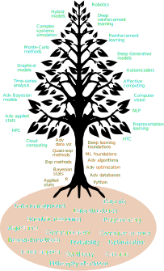

The Data Science Tree of Knowledge - What is Data Science and How to Educate Data Scientists
TL;DR
Here it is:

Now the essay.
Data Science challenges
As with any other science-based discipline, Data Science tools and core of knowledge changes constantly. During my sociology, public policy, and psychology studies, I quickly learned that research perpetually redefines the boundaries of knowledge. Through friends in fields like physics, biology, engineering, and medical sciences, I have learned that the situation is no different there. Yet, I believe there are a couple of characteristics that make Data Science a particularly hard to “keep up with” as a field. More than most fields I am aware of at least. If you are active in social media, you will quickly find testimonies of people feeling overwhelmed by the pace of change of the field, and its overall fuzziness. With this in mind, in this brief essay, I try to answer the following questions: (1) What is Data Science?; (2) Why is so hard to “keep up with” Data Science tools and knowledge?; (2) What can we do about it (question 2)?
What is Data Science? Buzzword or discipline?
There is no universal agreement around what Data Science “is”. True, you may have read or heard things like “Data Science is the intersection of computer science, mathematics/stats, and science” or maybe “Data Science is the application of data-related tools and knowledge to solve practical problems”. However, there is no reason for you to accept such definitions. There is nothing special about them. All of them are essentially proposals, no matter how many Twitter followers, degrees, academic papers, or awards the definition proponent possesses. Based on this fact, you may contest the whole “What Data Science is” as a pseudo-problem. Maybe Data Science is just another empty label created by people who wanted to profit from making applied statistics to sound cooler. If I had a dollar for every time I read/heard Data Science is just “applied stats” I would be doing something fun my pile of money instead of writing this.
But this is the thing: the whole “what a discipline really is” is a universal problem. If you have had a chance to read about the history and epistemological foundations of any discipline, you will find that more often than not, multiple definitions and perspectives about what a discipline “really is”, each one with its group of advocates and followers. Just go to ask a cognitive psychologist and a behavioral psychologist for a definition of psychology. You will end up with 4 or 5 definitions (yeah, from just 2 people). So, the whole “Platonic” conundrum about what disciplines “really are” should not deter you from taking a discipline seriously. Particularly with disciplines that can impact large numbers of individuals, especially vulnerable individuals, as Data Science. In any case, whatever you think Data Science “really is”, probably has something to do with things like data, mathematics, algorithms, and human insight, blended in such a way that makes sense.
“Got it. There are many reasonable definitions of Data Science and it may be a thing. So what?” You see, I do care about this because your understanding of what Data Science “is”, provides substance to the discussion of why, in my view, it is so damn hard to keep up with the pace at which things change. Let me begin by claiming the following: Data Science is an applied discipline, like engineering or medicine. This may or may not amount to anything to you but saying that it is not like physics or pure mathematics is a step forward in my view. Take applied fields like engineering and medicine. They exist in a duality: they have their own goals and points of view, but at the same time are constrained by the evolution of disciplines like physics, biology, mathematics, and computer science (among others). It is pretty transparent that Data Science also depends on the evolution of computer science and mathematics, but does Data Science have any “independent” goal? Any “unique” point of view? Its unique concerns? If Data Science cannot find any particular “angle” and unique “space of concerns”, there is little point to raise Data Science to the category of “Discipline”.
With the aforementioned ideas in mind, let me define Data Science goals as follow: answering user-defined meaningful questions by applying scientific reasoning and mathematical and computational tools. Great, but what kind of questions? Electrical engineering is about, well, electricity. Hence, electrical engineering deals with questions related to the technology of electricity. For instance, does a question about women’s health which applies the scientific method and mathematical and computational tools qualify as a “Data Science question”? Probably yes, but it also qualifies as a Public Health question, and Public Health experts exist already, so why on earth to invent a new label for something it has one already?
This is the main challenge for people who self-identify as Data Scientist: what makes you different from an econometrician, or a biostatistician, or a demographer, or a computer scientist, and any other data expert within a field? As it now, it sounds like we are just playing a “labels game” for convenience (marketability). I have read/heard people pointing out to their programming skills “I am a better programmer than any biostatistician I know of”. If this answer suffices for you, cool, you can skip the rest of this article. Otherwise, if you are like me, such an answer is unsatisfactory. After all, neither biostatistics nor Data Science is a programming-skills competitions, and what counts as a “good programmer” is not clear at all.
In my view, what sets apart and helps to Define Data Science as a discipline, it is the how-to jointly use data, mathematics, and computational tools, to address empirical questions IN ITSELF. If this sounds like a reiteration of my first definition, pause and ponder for a second. It is not. The key is the “IN ITSELF” part of it. Rephrasing it, is about the art and science of the question-answering with data plus math plus computational tools. “Wait, isn’t that the goal of computer science or statistics”. It is not. At least not necessarily. Strictly speaking, statistics can generate new and useful knowledge without any regard for, for instance, practical computational constraints. True, ultimately, to be useful, you must pay attention to things like data collection procedures and computational resources, but the point is that this is not required in principle. Same with computer science, which is the study of computation and information. How you get such data, or how to formulate appropriate questions, or how to apply the scientific method, are not concerns of computer science, not in principle at least. Yet, I propose, they must be concerns of Data Science and Data Scientist, always.
What about biostatistics? Or Econometrics? After all, it sounds like they do care about all that stuff at once. Here is my issue: econometricians do not care (no in principle) whether the methods will be useful for biology, and biostatistics do not care whether their methods are appropriated for microeconomics applications. More generally, they do not care about developing tools and methods to answer empirical questions in general, and tend to be a bit indifferent to things like computer architectures and other disciplines’ algorithms. But those issues MUST be of consideration for Data Science as a discipline (as I understand it). Ideally, Data Science should be able, as a discipline, to address the mathematical and computational needs of a wide variety of disciplines and fields of inquiry. “But NOBODY can do that, Pablo!” Of course, no single individual can! In the same manner that no single medical student can address all medical problems of the human species. But medicine, as a discipline, aims to address that issue, and Data Science as a discipline should have such a general scope. Here are some examples of things that a Data Scientist should care about:
- What is the best way to store data from different sizes and formats?
- When to automate data processing pipelines?
- When is it a good idea to use a declarative versus an imperative approach to data visualization?
- What questions are appropriated to ask when using unsupervised learning methods?
- At what point is it a good idea to move your data processing pipeline to a cluster of computers in the cloud?
- In what circumstances quasi-experimental methods are an acceptable replacement for randomized experimental methods?
- At what point is worth writing code in low-level programming languages like C++ or Fortran rather than Python or R?
These are just a couple of examples of questions which, I believe, share the two traits: generality, i.e., are relevant for a wide variety of fields of expertise, and cross-discipline, meaning that they require knowledge and skills of several fields to be answered.
With this idea in mind, and assuming you find my perspective acceptable, I can address the next question.
Why is so hard to “keep up with” Data Science tools and knowledge?
Short answer: because of its generality and immaturity. Trying to keep up with “medical sciences”, as a whole, is impossible for any finite human being. Keeping up with Data Science as a discipline, it is equally impossible. I believe many people in the field feel overwhelmed because they are constantly bombarded with the latest and greatest advances in “Data Science”, which can come from: time-series analysis, declarative data visualization, computer vision, affective computing, natural language processing, emotion synthesis, econometrics, biostatistics, signal processing, applied mathematics, information theory, new python libraries, new R libraries, new MATLAB libraries, new JS libraries, new computer architectures, new GPUs, new Big Data technologies, new optimization techniques, and the list goes on and on. The broad scope of Data Science is a course for its practitioners.
One of the reasons sometimes it feels like Data Science is impossible to narrow down in scope, is because of hiring practices. For example, I have gone through at least 20 cycles of interview processes, from places as diverse as Airbnb, Asana, Trivago, McKinsey & Company, and Akuna Capital, and pretty much all of them were different. “Did you even look at the job description?” The hell I did, and no, the job description was of little use to narrow down my preparation, as most of them incorporated all skills and technologies under the sun. I have been asked to solve problems using traditional machine learning techniques, using deep learning techniques, to implementing advance SQL queries, to create engaging and insightful graphs, to design randomized controlled experiments, to utilize quasi-experimental econometric techniques, to solve complex algorithm problems, to code in R, to code in Python, and the list goes on and on. When the market implicitly defines Data Science as the whole field at once, you are doom to feel overwhelmed by the share size and pace of change of the field. You are never ready, you are never good enough, you will never master your craft because the craft is too big and brittle to master.
Another reason is the eagerness from academia, industry, government, and even single contributors, to innovate and “put things out there” as fast as they can. Not that constant investment and innovation is bad, not at all, but it does create a perpetual cycle of fast obsolescence of skill and knowledge. “Oh, so you spent a year becoming a TensorFlow 1.X expert? Too bad, we want TensorFlow 2.X now” Or “Wait, no, we changed our mind, we want PyTorch experts now. But you know what, we learned bout this great new thing, MXNet, we heard that Amazon use it, and we want to follow their lead, so we want experts in both”. Or changing from R to Python. Or mastering both natural language processing AND time-series analysis, because, why not, how hard it can be, right?
Last but not least, I mentioned Data Science immaturity. This implies two things: (1) most people have no idea of where does Data Science begins and ends, or what a Data Scientists is supposed to look like, or what they can or cannot do; (2) most people have no idea how to educate Data Scientists, or what does constitute a well-stablished core of knowledge for the discipline.
Engineering and medicine are old enough disciplines that there is some degree of agreement regarding what they are, how do they look like, and what are they expected roles and preparation. Most schools more or less agree on how to educate engineers and physicians, and a sensible core of knowledge has been defined as a basis for the discipline. I believe, this is what Data Science is missing: an agreement about the identity, roles, preparation, and what a sensitive core of knowledge looks like.
What to do about it
In my experience, when I point out an issue, people are quick to ask me for a solution, usually a bit annoyed by my impertinence. I do not know how to fix the issue as a whole, but I do have a couple of ideas, particularly on the side of Data Science education and definition of a “sensible core of knowledge”. This I what I - presumptuously- call “The Data Science Tree of Knowledge”.
The Data Science Tree of Knowledge
Before offering my perspective about what should constitute the “Data Science Tree of Knowledge”, I want to briefly look at what “top” programs in the world are offering as an educational core at the undergraduate and graduate level in Data Science.
UC Berkeley offers a good example of the disciplinary basis for Data Science education:
- Foundations of Data Science
- Calculus I and II
- Linear Algebra
- Program Structures
- Data Structures
- Domain Emphasis
At the graduate level, the NYU PhD in Data Science is a great example:
- Introduction to Data Science
- Probability and Statistics for Data Science
- Machine Learning
- Big Data
- Inference and Representation
Another way to assess this is by looking at eligibility requirements for graduate programs. The University of Toronto’s MS in Data Science specifics:
At least two senior level statistics courses equivalent to:
STA 302H Applied Regression Analysis, and/or
STA 347H Probability Theory, and/or
STA 452H/453H Introduction to Mathematical Statistics
At least three senior level computer science courses equivalent to:
CSC 373H Algorithms and complexity
CSC 343H Database Systems
CSC 369H Operating Systems
Undergraduate and graduate education operate under time, financial, and human capital constraints, so it is expected they will not put everything they would like to in the curriculum.
My goal is a bit more abstract and unconstrained by the factual realities of universities and professional degrees. I want to propose an idealized yet sensible corpus of knowledge for the discipline, which may serve as a foundation for Data Science education. I use the Tree of Knowledge metaphor, as it nicely represents the interconnectedness, fuzziness, and importance of strong foundations I want to convey.
Roots
The roots of the tree are interconnected disciplines which provide the foundation’s Data Science as a discipline and Data Scientists as practitioners. In an ideal world, these are the subject people should spend most of their time and effort, as strong foundations will allow for quicker and, more importantly, higher-quality learning of subsequent subjects. In sum, these are the topics I think all Data Scientists should learn about regardless of their future area of expertise:
- Calculus
- Linear algebra
- Probability theory and statistics
- Discrete mathematics (set theory)
- Intro to optimization
- Intro to information theory
- Intro to algorithms
- Intro to programming
- Intro to computer science
- Intro to data structures
- Intro to data management
- Scientific method and reasoning
- Science communication
- Quantitative and qualitative research methods
- Philosophy of science
- Intro to data visualization
Trunk
The trunk of the tree represents a collection of topics that can be selected depending on interest and area of desired expertise. Not all Data Scientists need to learn about Deep Learning. If you have been following all the buzz about Deep Learning, you may think this is utter nonsense. “EVERYONE should know about Deep Learning”. Well, I do not believe so. Becoming a proficient Deep Learning practitioner takes an enormous amount of time and dedication. I do not believe you can master experimental and quasi-experimental methods, AND Deep Learning at the same time. True, it is useful to know what is “Deep Learning all about” but that it is completely different from becoming a Deep Learning practitioner. So, it is nice to have notions about most subjects, but practitioners should focus on a synergistic (is that even a word?) and a manageable subset of topics like:
- Advance optimization
- Intermediate algorithms
- Machine learning foundations
- Deep learning foundations (neural networks)
- Applied statistics
- Applied Bayesian statistics
- Advance data visualization
- Randomized experiments
- Quasi-experimental methods
- Programming in Python or R
- Advance databases
- Cloud and distributed computing
Branches
Finally, the branches of the tree represent topics that require intense dedication and expertise. Think of this as acquiring a medical specialty, like pediatrician or internal medicine. This means I do not believe everyone should learn about these topics. Actually, as many physicians do, you may skip this section altogether and become a perfectly high-quality and competent professional by mastering some cluster of topics from the trunk of the tree. When I see people offering courses to master stuff like “Computer vision” or “Graphical models” in a 2 months course, I cannot avoid but to feel such a person is just trying to profit from the hopes and dreams of hardworking people. True, there are examples of people that learned a lot from such courses, and some went as far as getting a job in that specialty. But those are exceptions, not the rule. I do not have the numbers here, but I am pretty sure they are not many computer vision experts who learned their craft in a 2 months Udemy course. By the way, I do not look down at those courses at all! I have taken (yes, I PAID) $11 Udemy courses as well. There are fine but they are no replacement for proper Data Science education. Notice I say “education” not “degree”, which I think are different things: self-educated people is valuable and competent as any fancy degree-holder, but self-education ought to be done seriously, meaning a plan, meaning long hours, meaning years of effort. In any case, these are topics that require two things: a solid foundation in general Data Science topics (see now?), and significant time and effort as their complexity requires:
- Time-series analysis
- Advance applied statistics
- Computer vision
- Natural language processing
- Reinforcement learning
- Deep reinforcement learning
- Graphical models
- Advance artificial intelligence
- High-performance computing
- High-throughput computing
- Cloud computing
- Representation learning
- Deep generative models
- Advance Bayesian models
- Monte-carlo methods
- Affective computing
- Human-computer interaction
- Robotics
- Hybrid models
My roots, trunk, and branches lists are by no means complete or exhaustive, but I hope are enough to convey my main points: Data Science, as a discipline, does require a sensible core of knowledge to define itself as a discipline, and to envision a clear learning path for people who aspire to become a Data Scientist.